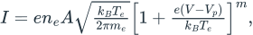

整体概括
一次飞行贯通仪器、反演和科学解释
本文介绍学生团队设计、运行和分析的探空火箭原位测量实验，目标是获得低电离层电子密度随高度的剖面，同时总结如何将真实航天任务纳入课程。火箭最高到达约 114 km，随后返回地面。其核心产物是测量链和电子密度剖面，而不是深度学习预测器，也没有报告 GNSS 位置精度提升。
对照原文证据
This article summarizes the design, operations, and results of the fourth version of the UDIP experiment (UDIP-4), which flew into space on the 2024 RockSat-C sounding rocket and successfully measured electron density as a function of altitude in Earth’s lower ionosphere.After T+40 seconds, the rocket followed a ballistic trajectory. It achieved apogee at approximately T+170 seconds at an altitude of 114~{\rm km} . The rocket payload deployed its parachute during its descent, splashed down into the Atlantic Ocean, recovered and returned to Wallops Flight Facility later the same day.先分清测得什么，再谈推断了什么
探针直接记录的是一系列偏置电压下的电流，电子密度由响应函数拟合得到；随高度出现薄层增强是结果解释的下一层。把电流、反演密度和偶发 E 层解释分开，有助于判断哪部分依赖仪器标定，哪部分依赖模型假设。这里测的是局地体电子密度，不是沿 GNSS 信号路径积分的 TEC，更不能由一条剖面直接推出区域定位风险。
对照原文证据
When a voltage is applied to a Langmuir probe, a response current flows from the probe to the surrounding plasma. Measuring the current for a series of voltages produces an I-V curve, which can be fit with a response function to extract plasma parameters such as the electron density and temperature [ 5 ] .An estimate of the electron density, n_{e} , can be extracted from each I-V curve for UDIP-4 data using a non-linear fitting algorithm to fit Equation 1 to the points from the electron saturation region ( V>V_{p} ). Each I-V curve’s V_{p} -value was identified by smoothing the data and then determining the voltage for which the current gradient was highest. Figure 3 shows the best-fit curve for the example I-V curve in red.Research gap
低电离层原位观测为何需要探空火箭
作者首先界定观测困难：低电离层的大气对常规飞机而言过于稀薄，对维持稳定轨道的航天器而言又存在较强阻力。无线电遥感可以提供观测，但要把仪器直接送到该高度测量粒子与场，探空火箭具有独特价值。本文回应的是观测可达性与教学工程实践，不应将其包装成突破某个 GNSS 解算或预测算法的论文。
对照原文证据
The gas at even the base of the ionosphere is too diffuse for conventional aircraft to achieve lift but also too dense for spacecraft to maintain stable orbits (due to drag).For in-situ observations, sounding rockets provide the best method for bringing instruments into the lower ionosphere to directly measure its particles and fields [ 6 ] .机械可存活与理想探针几何之间存在取舍
这篇文章的工程问题并非只要采用成熟探针原理就能解决。为承受发射中的阻力，实际探针被做得比理想细长圆柱更短、更粗，因此分析时没有直接把形状指数当成严格已知值。仪器结构、环境适应性与反演参数必须联合理解，这也是从实验室模型走到真实任务时值得借鉴的研究缺口。
对照原文证据
The value of m=1/2 assumes that the probe is a long, thin cylinder, and the UDIP-4 probes were made shorter and thicker than ideal to survive intense drag forces during launch (Section III.1 ).算法主线

原图由 arXiv 加载；若未显示，可打开下方原图链接。
跟着原图读
- 先读坐标：电压与电流不是高度与密度
横轴为扫描电压 V，纵轴为电流 nA。蓝线标记平滑电流过零的位置，绿线标记电流梯度最大的电势；二者物理意义不同，不能互换。
- 再看红线覆盖范围
红线只拟合高于绿色电势线的电子饱和区，而非整条扫描曲线。低电压部分仍是测量数据，但不应被同一电子响应式强行拟合。
- 最后看图例中的拟合参数
图例中的密度与指数属于这一条扫描曲线，不是整次飞行的平均值；电子温度由分析预先固定。曲线吻合不能单独证明绝对密度和温度都已被准确辨识。
原始图注称散点为 cyan，当前原图显示偏蓝；按“测量散点”与“拟合线”区分即可。这里不从显示颜色或像素位置补造额外参数。
扫压—测流—存储构成直接测量链
实验使用一对相同的圆柱探针，一支相对火箭电气地保持参考，另一支进行直流电压扫描；电流经周围等离子体流动后被记录。科学板负责扫描和读数，飞行计算机负责命令、数据存储及运动测量。这里的参考是载荷电气地，而不是直接等同于周围等离子体电势，分析时仍须从曲线识别浮动电势与等离子体电势。
对照原文证据
One probe served as the “ground” probe and was kept at 0~{\rm V} relative to the rocket’s electrical ground; the other was the “sweep” probe and was swept through a series of DC voltages.The microcontroller carried out a voltage sweep on command from the flight computer (Section III.3 ) and sent the resultant I-V curve data to it via a serial communications line.只在电子饱和区拟合，并显式固定难辨识参数
先平滑电流—电压数据，以电流梯度最大的电压估计等离子体电势，再只拟合高于该电势的电子饱和区。初始尝试同时拟合电子温度与密度时，温度不确定性远大于估计值，因此作者参考理论与既有测量将电子温度固定为 500 K；密度和形状指数继续拟合。这是为解决参数不可辨识所作的约束，不能说实验已经独立测准电子温度。
对照原文证据
An estimate of the electron density, n_{e} , can be extracted from each I-V curve for UDIP-4 data using a non-linear fitting algorithm to fit Equation 1 to the points from the electron saturation region ( V>V_{p} ). Each I-V curve’s V_{p} -value was identified by smoothing the data and then determining the voltage for which the current gradient was highest. Figure 3 shows the best-fit curve for the example I-V curve in red.Consequently, a fixed value of T_{e}=500~{\rm K} was chosen for all fits based on theoretical predictions [ 4 ] and measurements from other missions [ 17 ] .Conversely, the exponent m in Equation 1 was allowed to vary as a free parameter in each I-V curve fit.关键公式
电流响应同时受到密度、温度、电势和几何影响
下方保留原文的电子饱和区响应公式。密度通过幅值影响电流，电子温度同时进入热速度尺度和无量纲电势差，形状指数控制曲线随电压的变化。可见“拟合曲线很贴近数据”并不意味着所有参数都被独立确定；应同时检查有效电压区间、参数协方差及对固定温度的敏感性，而不是只汇报残差大小。
对照原文证据
The data with V>V_{p} are in the “electron saturation region” and are characterized by currents that arise almost entirely from electron motion. The response function in this region is [ 5 , 20 , 17 ] :An estimate of the electron density, n_{e} , can be extracted from each I-V curve for UDIP-4 data using a non-linear fitting algorithm to fit Equation 1 to the points from the electron saturation region ( V>V_{p} ). Each I-V curve’s V_{p} -value was identified by smoothing the data and then determining the voltage for which the current gradient was highest. Figure 3 shows the best-fit curve for the example I-V curve in red.In initial fits of the I-V curves, T_{e} was allowed to vary as a free parameter along with n_{e} , but the fitting algorithm consistently returned uncertainties in T_{e} that were multiple orders of magnitude larger than the best-fit values in T_{e} .圆柱的理想指数是参考，不是强行固定的真值
原文给出长而细圆柱与球形探针对应的不同指数，并说明本实验让指数自由变化，以适应为了发射强度而偏离理想几何的探针。多数曲线的拟合指数仍更接近圆柱情形。这个结果支持所选几何近似的合理性，但不能替代对鞘层、光电子和绝对标定的进一步检查，也不能把指数变化直接解释为电子密度变化。
对照原文证据
where m=1/2 for a long, thin cylindrical probe, but m=1 for a spherical probe.Conversely, the exponent m in Equation 1 was allowed to vary as a free parameter in each I-V curve fit. The value of m=1/2 assumes that the probe is a long, thin cylinder, and the UDIP-4 probes were made shorter and thicker than ideal to survive intense drag forces during launch (Section III.1 ). Even so, for most I-V curves, the best-fit m -value was closer to m=1/2 than to m=1 (the value for a spherical probe).由电子饱和区的电流曲线反演电子密度

电流幅值由电荷、电子密度、有效探针面积和热速度尺度共同决定，方括号描述电压相对等离子体电势的响应。只在文中电子饱和区使用。采用国际单位制时，密度用每立方米、面积用平方米、温度用开尔文、电流用安培；原图展示的每立方厘米与纳安培需要显式换算。
符号与实现提醒
- I / V
- 测量电流与相对载荷电气地的扫描电压。
- ne / A
- 电子数密度与响应模型使用的有效探针面积，面积定义须回到仪器几何与原文参考核对。
- Te / Vp
- 电子温度和由电流梯度确定的等离子体电势；本次反演固定温度而非独立测得温度。
- e / kB / me
- 基本电荷量、玻尔兹曼常数和电子质量。
- m
- 几何响应指数，不是电子质量；本文允许其在拟合中自由变化。
原文只有这一条可提取的展示公式，本站不为凑数量补造第二条。不能把电子饱和区公式套到整条曲线，也不能将条件于固定温度的拟合误差棒当成总不确定度。
实验怎么做
飞行时间、高度和测量窗口来自不同信息源
高度由地面雷达跟踪获得，载荷运动由机载运动传感器记录；科学测量只在发射后 T+50 到 T+400 s 的预定窗口开启，火箭大约在 T+170 s 达到约 114 km。将电流记录与雷达高度、载荷姿态及飞行阶段对齐，是形成密度剖面的必要步骤，不能把时间轴直接当成均匀高度采样。
对照原文证据
Altitude measurements were derived from radar tracking data from NASA Wallops Flight Facility.The UDIP-4 electronics, which had been activated at approximately T-57 seconds, continued collecting data from the 9-DoF module until the recovered experiment was deactivated. As noted in Section III.3 , the UDIP-4 flight computer was programmed to only collect Langmuir probe data between T+50 and T+400 seconds, when the rocket was expected to be at its highest altitudes.After T+40 seconds, the rocket followed a ballistic trajectory. It achieved apogee at approximately T+170 seconds at an altitude of 114~{\rm km} . The rocket payload deployed its parachute during its descent, splashed down into the Atlantic Ocean, recovered and returned to Wallops Flight Facility later the same day.与经验模型比剖面，不是训练集测试集的预测评测
作者将本次发射地点、日期和时刻对应的 IRI 理论剖面与反演密度对照，并分别查看上升和下降。过低高度处探针难以可靠测量，低于 90 km 的数据未用于展示；平滑与误差棒也有明确含义。这不是模型训练后在独立样本上的预报误差表，IRI 与局部实测不一致也不能自动等同于 IRI 整体失效。
对照原文证据
Figure 4 shows the trend in UDIP-4 measurements of n_{e} versus altitude for both the rocket’s ascent and descent. Data from altitudes less than 90~{\rm km} are omitted since the electron density was generally too low for UDIP-4 to reliably measure. A smoothed version of the UDIP-4 data (produced with a ten-point smoothing window) is plotted in red. The error bars indicate the uncertainties in density returned by the fitting algorithm and do not include any additional error resulting from the choice of a fixed electron temperature (Section V.2 ).The orange curve in Figure 4 shows the theoretical electron density profile predicted by the International Reference Ionosphere (IRI 2020) model [ 4 ] for the date, time, and location of the rocket launch.
原图由 arXiv 加载；若未显示，可打开下方原图链接。
跟着原图读
- 上图先读来源和单位
上图纵轴为 km、横轴为发射后秒数，蓝线是雷达高度；科学数据起点和远地点用不同竖线标注，不应把开始采集当成开始进入目标增强层。
- 下图再读载荷坐标系
下图纵轴为 m/s²，不是地理坐标系下的轨迹二阶导数。灰色燃烧区和载荷自旋会影响各轴读数，不能把后段某轴持续非零直接解释为火箭持续推进。
- 与密度周期联系时保留推断边界
本图帮助理解测量处于什么运动状态；密度的周期伪迹还需结合正文周期分析与照明条件判断，仅凭两条曲线看似有周期不能确认物理因果。
图中加速度属于安装在旋转载荷上的传感器。不能直接将其积分成无漂移高度，也不能把这张飞行记录说成电离层密度波动的观测结果。
提升与证据
两次穿层都见到增强，但不能当成同一点的时间演化
作者报告薄层密度峰在上升约 111 km、下降约 108 km，半高全宽分别约 4 km 和 2.5 km；两次穿层相隔约 62 s，同时也相隔约 13 km 的水平距离。作者认为差异主要更可能来自空间不均匀性。由于空间和时间同时变化，这个观测不能单独确定薄层随时间下降的速度，更不能直接归因于某一种演化机制。
对照原文证据
The peak density occurred on the ascent at an altitude of about 111~{\rm km} but at 108~{\rm km} on the descent. Likewise, the thickness (full-width at half-maximum) of the layer was about 4~{\rm km} on the ascent and 2.5~{\rm km} on the descent.Most likely, these differences are mostly due more to spatial inhomogeneities than to temporal changes since UDIP-4’s two passages through the layer were separated by 13~{\rm km} in horizontal distance but only 62~{\rm s} in time.原始密度的周期起伏可能是仪器照明效应
作者对密度时间序列做 Lomb–Scargle 分析，得到约 5.4 Hz 的显著峰，与载荷平均自旋频率接近，并将准周期起伏解释为探针旋转进出阳光时光电子数量变化。这是合理的仪器效应解释，不是新增的等离子体振荡发现。作者也指出阳光效应影响绝对标定，因此不能把平滑后曲线的每个细节都当成真实空间结构。
对照原文证据
As the rocket rotated, the Langmuir probe passed in and out of sunlight, which caused the number of photoelectrons around it to vary widely. This interpretation is supported by a Lomb-Scargle periodogram [ 23 ] that was produced from the time series of n_{e} measurements and that showed a strong peak at 5.4~{\rm Hz} .Though the complex effects of sunlight on Langmuir probes certainly affect the absolute calibration of UDIP-4 density measurements, the relative changes in n_{e} values are likely robust.
原图由 arXiv 加载；若未显示，可打开下方原图链接。
跟着原图读
- 先辨纵轴：不是两条同向高度曲线
下半部是上升，向上接近远地点；上半部是下降，越向上高度越低。黑色水平线标出远地点连接处，因此不能按整张图的纵向距离计算层厚或统一的高度差。
- 再看密度、模型与平滑的分工
横轴标有 cm⁻³ 与 ×10⁵。深蓝点为反演密度，红线为平滑结果，橙线为模型；增强层对应相对橙线突出的局地峰，不是红线本身新增的一组独立测量。
- 最后检查误差与时空位置
水平误差棒仅来自拟合，不包含固定温度的系统影响。图中标注两次穿层的时间和位置；它们并非同一点重复观测，不能从峰高差直接计算薄层下降速度。
这是一次飞行的局地剖面，不是全球 TEC 或 GNSS 误差图；不据像素估算峰值精确数值。原图误差棒也不能证明光电子和温度假设造成的误差已被消除。
局限与追问
图中的误差棒不是总测量不确定性
作者明确说明，密度误差棒来自拟合程序，不包含固定电子温度带来的额外误差。再加上阳光和光电子影响，图中局部很小的误差棒不能被读成绝对密度已经高精度标定。需要区分随机拟合误差、模型约束误差和仪器系统误差；本次导读没有运行原始反演，也没有重新估算这些不确定度。
对照原文证据
The error bars indicate the uncertainties in density returned by the fitting algorithm and do not include any additional error resulting from the choice of a fixed electron temperature (Section V.2 ).Though the complex effects of sunlight on Langmuir probes certainly affect the absolute calibration of UDIP-4 density measurements, the relative changes in n_{e} values are likely robust.与偶发 E 层一致，不等于已完成独立同步确认
作者结合高度、形态和既有火箭文献将增强层解释为偶发 E 层，同时承认本次载荷没有第二种测量装置作确认。读者应保留这个证据边界：历史文献的一致性支持解释，但不等于在同一地点、同一时刻独立验证薄层性质。本文也不能直接给出薄层对某个 GNSS 链路闪烁或模糊度固定的因果影响。
对照原文证据
While UDIP-4 did not have a secondary measurement device for confirmation of the E_{\rm{S}} layer, the previous literature agrees well with our measurements.This feature is consistent with a sporadic E layer ( {\rm E}_{\rm S} ) [ 8 , 26 , 16 , 14 ] .连接你的研究
面向电离层监测：设计有独立确认的多源事件表
可将这类剖面观测与电离层测高仪、相干散射雷达及附近 GNSS 观测建立事件级时空对齐表，预先规定匹配时间窗、距离与高度口径。交付增强层检出率、高度偏差、空间匹配误差和缺测比例，再检查与 ROTI 或闪烁的统计关系。不能把沿轨迹的体密度直接转换成某条 GNSS 路径的 TEC，也不能仅凭同步出现就认定薄层引发定位异常。
面向工程算法：先做反演敏感性，再考虑训练预测器
可复现电压区间筛选和平滑步骤，在独立合理温度范围及不同指数约束下重复反演，并按自旋相位分组比较密度变化。交付参数相关性、密度敏感度、留出电压点拟合残差和周期伪迹幅度。若将结果用于机器学习，应把仪器状态与质量标志一并保留，并按飞行或任务分组验证，避免让模型学习阳光与姿态伪迹而非等离子体变化。
来源与边界
原图来自固定版本的 arXiv 官方图源，作者及图注已保留；外部嵌入不自动授予转载权。本站不镜像作者图片、PDF 或全文，另行转载须核对许可。外部原图受读者网络条件影响；图后解说由 AI 生成，仍需回原文核验。
对照原始英文摘要
收录历史：2026-10-21
原文许可：查看本版本许可 ↗；外部嵌入不等于任意转载授权。